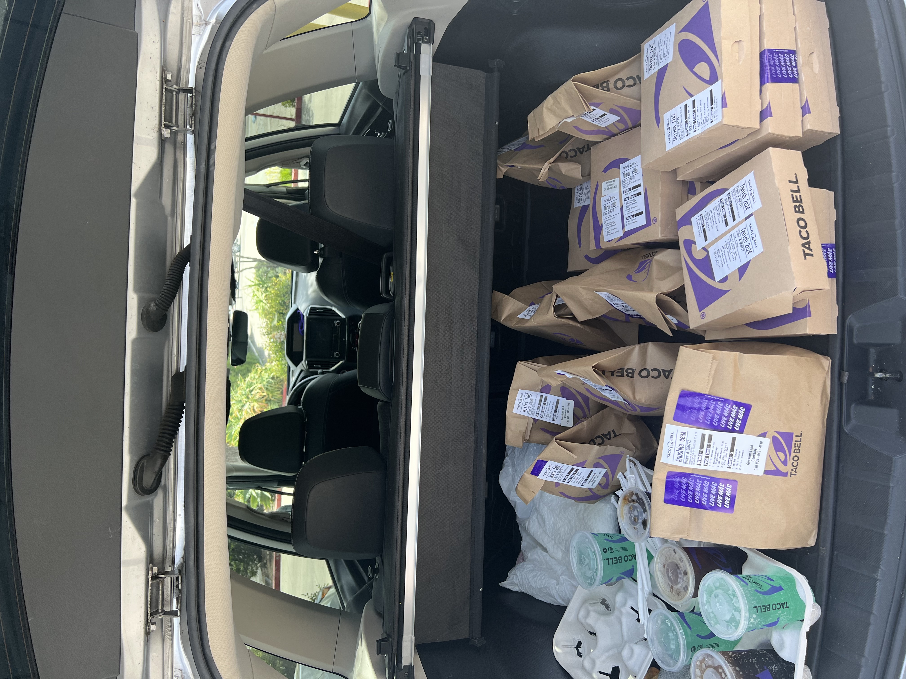
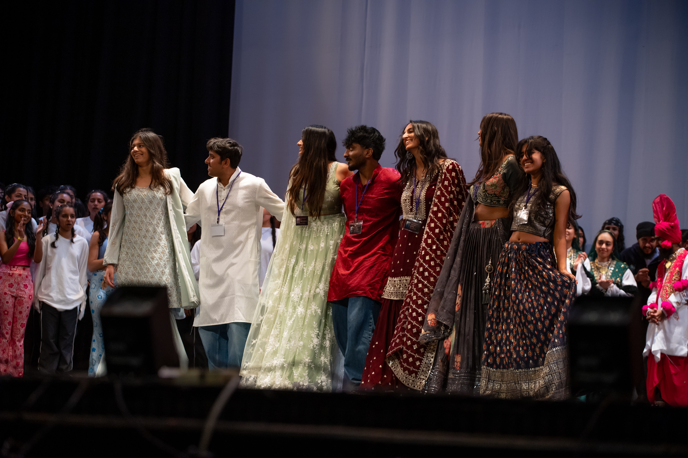
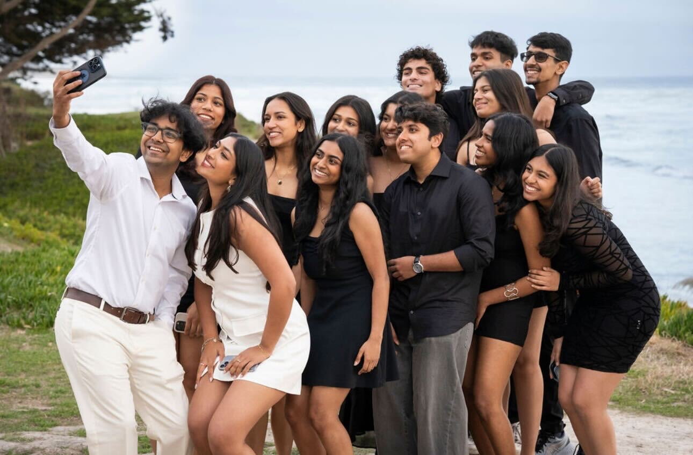
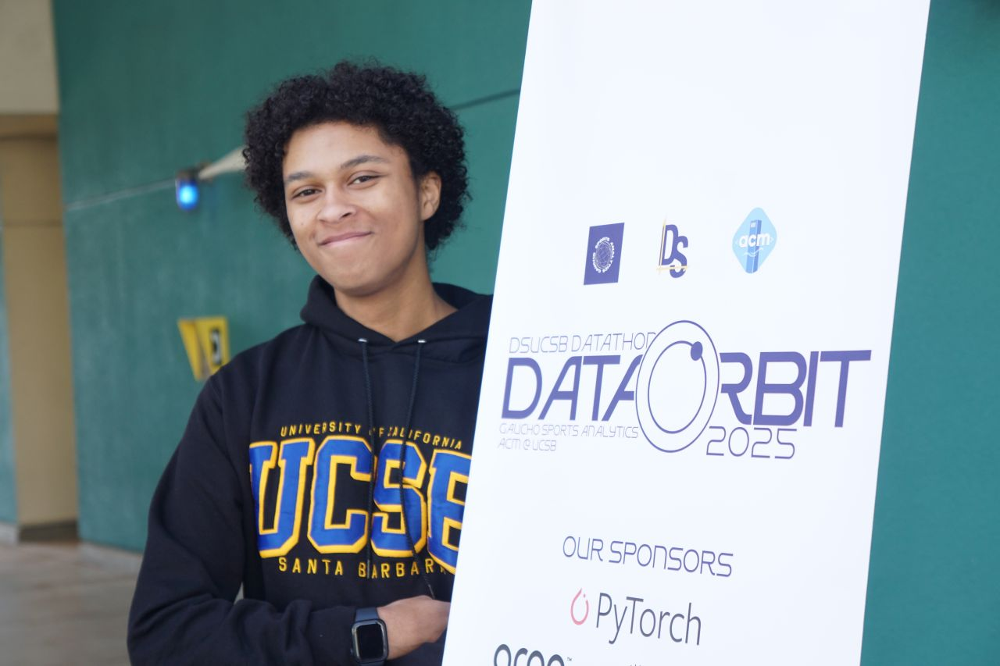
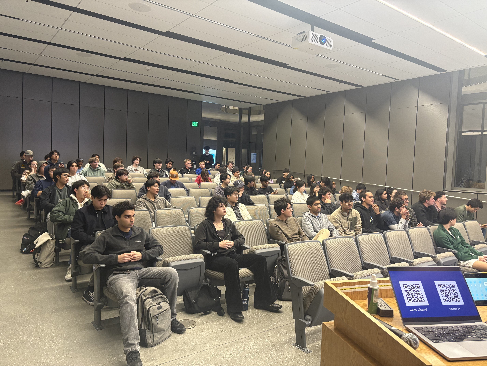
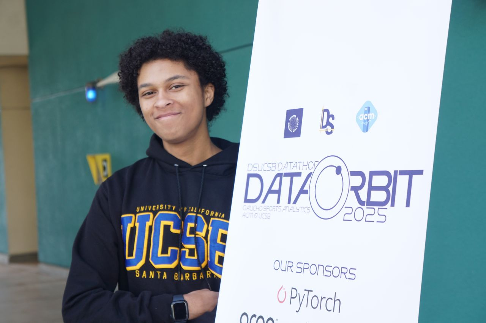
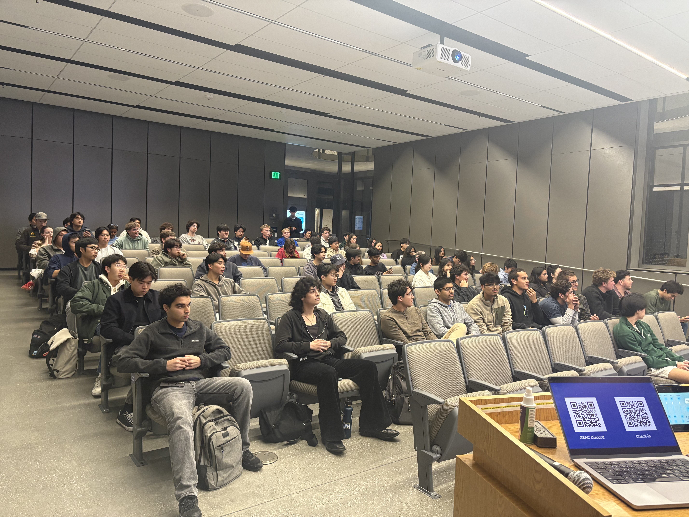

ucsb dhadkan




quick facts
bollywood-fusion dance national competition
organizing multiple cultural events through the year
charity fundraising (all profits to a chosen charity)
production & stage mgmt on the day of the show
my role & contributions
- serving as president; coordinating show operations across venue, team management, outreach, finance and more
- driving sponsorships & campus partnerships; supported charity fundraising initiatives
- led branding & ticketing efforts as previous outreach executive, collaborating on themed events and marketing assets
- managed stage set-up, post-show concert set up and stage management for two years running
 


